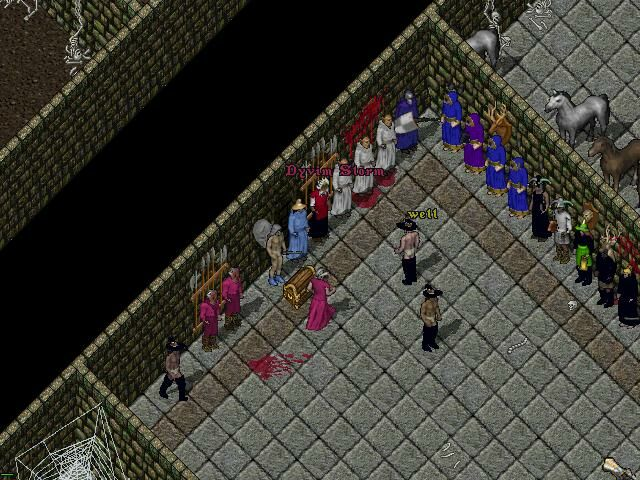
Everyone hugging the wall before the event.

The first fight of the evening is under way. The Black Dragons Team Two (BD2) vs The Order of the Golden Dawn (OGD).
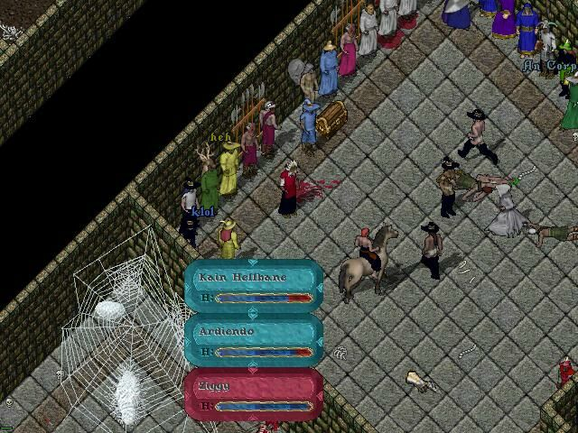
OGD falls, The Black Dragons are victorious.
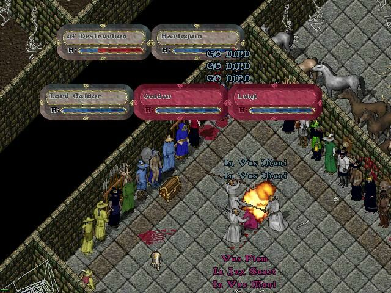
Luigi, Galdor and Goldur laying the smack down on Destruction.
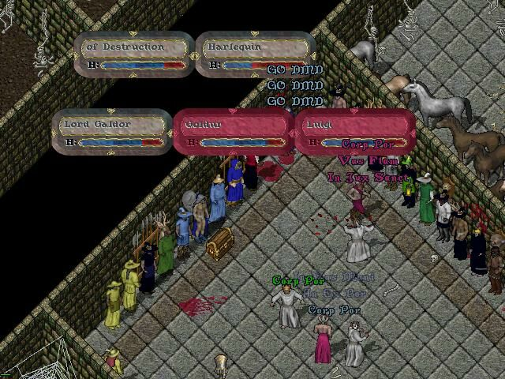
Luigi and DMD still going at it with the team of Anton LaVey, Harlequin and Destruction.
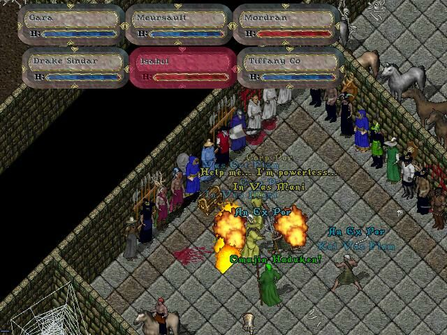
Isabel and Mordran both drop right off the bat.

The 2 remaining members of OGD going at it. Looks like things are heating up for Tiffany Co.

Gara and Meursault finish off Drake Sindar and win the match.
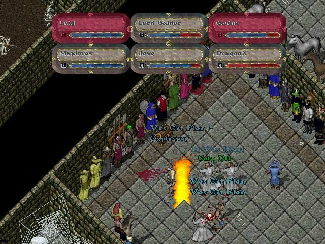
BD1 goes at it with the currently undefeated team of Luigi and DMD. Is it just me or is Jove doing a back flip.
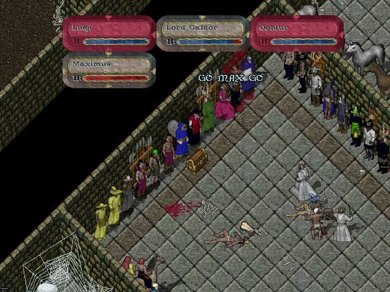
Luigi and DMD finish off Maximus, remaining undeafeated and also flawless.

The Three Lost Padres take out Ardiendo within seconds after the fight began.
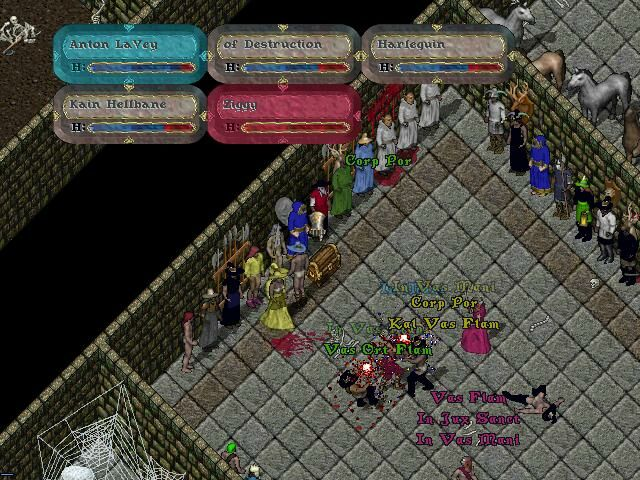
Anton LaVey delivering the final blow to Ziggy. Harlequin, Anton LaVey and Destruction ended up with a flawless victory.

OGD were the next to take on Luigi and DMD. Luigi, Galdur and Goldur started out strong as usual, demolishing Mordran within seconds after the match began. Though moments later OGD returned the favor, dropping not only Galdur but also Goldur. Leaving Luigi on his own. They were the first in the tournament to kill a member of Team Luigi. Just when it looked like Team Luigi was finished. Luigi himself killed both Gara and Meursalt in a long 2 on 1 battle.
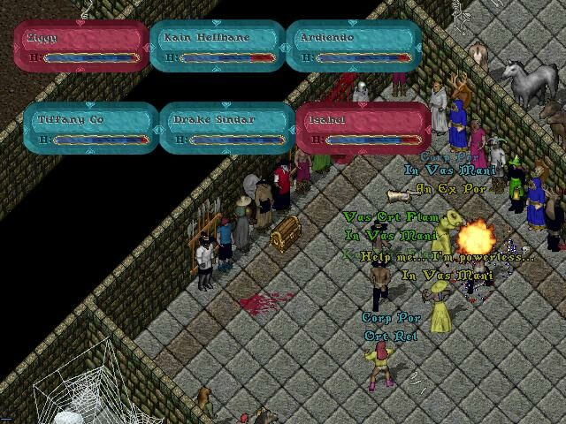
The Black Dragons Team Two go at it with The Ministry, in the first semi-final match of the evening.

After a few quick combos, Zig, Kain and Ard put an end to Isabel's life. BD2 ended up winning and advancing to finals.
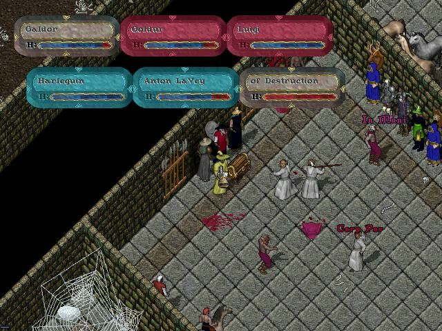
The Three Lost Padres and Team Luigi square off in the other semi final match. Luigi and DMD ended up winning and
advancing to finals.
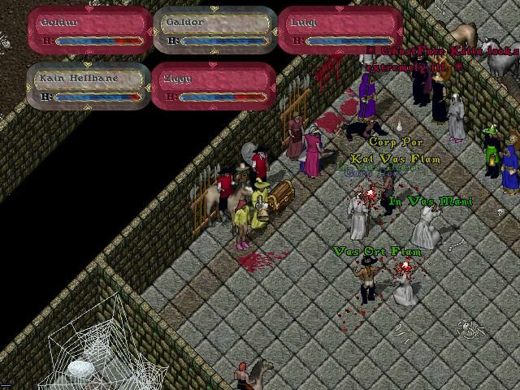
The finals were set. BD2 was set to take on the currently undefeated Team Luigi. To win, The Black Dragons would have to beat Team Luigi, not once but Twice. Team Luigi would only have to beat BD2 once, since they already suffered a loss to The Three Lost Padres (Harlequin, Anton LaVey, and of Destruction) Before the fight, Ardiendo had to leave and Madrid took his place.
The Match finally begun, and yet again Luigi and DMD started out strong, killing Madrid shortly after the fight began. BD2 chances for victory were ever so slowly decreasing, until by accident Luigi cast stonewall (a spell which had been added to the "illegal spell list" just before the tournament began). Since the rule was added on such short notice, the reef restarted the match instead of disqualifying Team Luigi.
It seems like BD learned from their mistakes, because just a few moments after the restart, then killed Guldor. 1 by 1 BD2 finished off Team Luigi, being the first team to defeat them in the tournament.
It appears someone reported Goldur for murder, in an earlier match, because when he resurrected he had 5% stat/skill loss, and lost him 7x GM status. Guldur ended up parting, to rebuild his character. Taking his place was Dakkon Aristar. The second match between BD2 and Team Luigi was fought hard by both sides, but in the end The Black Dragons prevailed, winning the tournament.